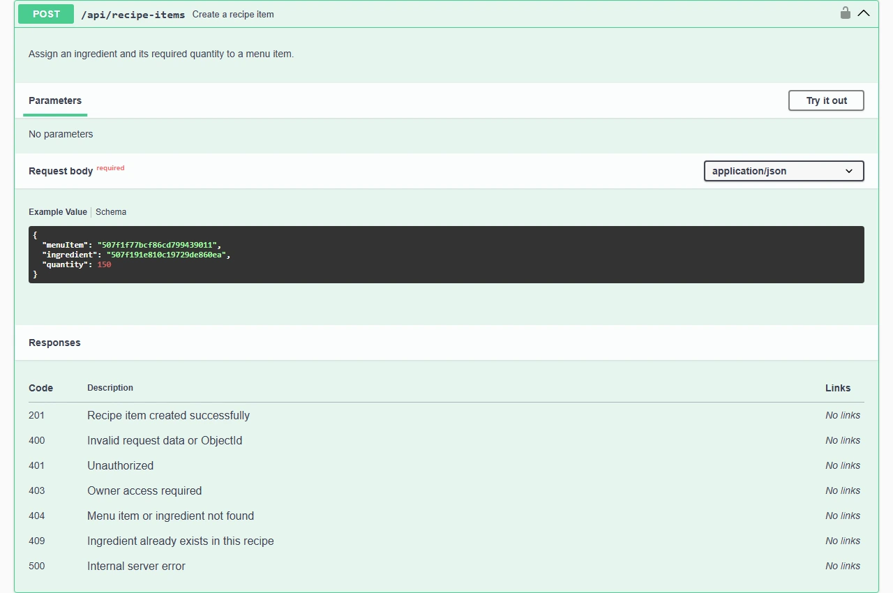

Backend Development / Personal Project
Coffee Shop API
Building a RESTful backend for café management
Coffee Shop API is a backend application designed to support café operations through structured RESTful endpoints and persistent database records. It focuses on organizing application data, handling HTTP requests, and providing documented interfaces for future frontend integration.

The challenge
A café menu, its ingredients, and its orders are related, but each changes for different reasons. I started with the backend so a future interface could ask for a menu, submit an order, or update availability through stable endpoints. The interface can focus on how people interact with that data while the backend handles access, persistence, and HTTP responses.
REST API design
The published contract groups operations under Menu Items, Ingredients, Recipe Items, Stock Movements, Orders, Users, Authentication, and Dashboard. Menu reads are public. The specification marks management operations with JWT bearer authentication and documents owner access where required.
| Method | Endpoint | Purpose |
|---|---|---|
| GET | /api/menu-items | List active menu items |
| GET | /api/menu-items/{id} | Read one item |
| POST | /api/menu-items | Create an item |
| PUT | /api/menu-items/{id} | Replace item details |
| PATCH | /api/menu-items/{id} | Change availability |
| DELETE | /api/menu-items/{id} | Soft-delete an item |
The item route takes a MongoDB ObjectId as its id path parameter. Creation takes a JSON body with a name, category, and nonnegative numeric price. The availability route takes a boolean isAvailable. In live checks, the list and detail reads both returned 200 with success and data fields. The list returned an array in data and the detail returned an object.
From HTTP request to database
The historical backend snapshot that matches the published contract uses index.js to configure Express, connect Mongoose to MongoDB, and mount resource routers and Swagger. The menu router dispatches to menuItem.controller.js, where the list handler queries MenuItemModel and sends a JSON response.
- Client sends
GET /api/menu-items - Express routes the request to the menu controller
- Mongoose queries MongoDB for active menu items
- The controller returns status and JSON data
Separating route registration, request handling, and model definitions makes it easier to change the shape of a document or the behavior of a handler without reorganizing every route.
Modeling menu items and ingredients
The documented RecipeItem resource connects a menu item with an ingredient and records the quantity needed for one serving of that menu item. The historical Mongoose model uses required ObjectId references and a required numeric quantity with a minimum of 0.001. Its compound unique index expresses one entry per menu-item and ingredient pair.
Menu item ← Recipe item → Ingredient
The menu model requires a string name and category and a nonnegative numeric price. The ingredient model records a name, a unit, and stock fields. These examples describe the documented resources and matching historical model definitions.
Validation and error responses
The published recipe-item creation contract calls for 201 on success, 400 for invalid input or identifiers, 404 when a referenced record is missing, and 409 when the ingredient is already part of that recipe. It also documents 401 for missing authorization, 403 for lack of owner access, and 500 for an unexpected server error. The distinctions give clients enough information to decide whether to correct input, request access, or handle a failure.

Documentation and testing
Swagger gives frontend developers one place to check operations, parameters, request shapes, and status codes. Some operations document status descriptions without a full response schema. The public menu reads were checked manually against the deployed host because Swagger’s server picker points to a local development address.
The API root and two public menu reads returned HTTP 200. The historical backend snapshot matched all 36 published operation definitions. That comparison identifies a source baseline for this case study. The exact Render build revision was unavailable, and protected and write operations were reviewed through documentation.
From interface work to API contracts
Building the API gave me practice connecting Express routes, Mongoose models, and HTTP responses around a consistent contract. Defining the success and error cases alongside the data model made it easier to see what a future frontend would need from each endpoint.